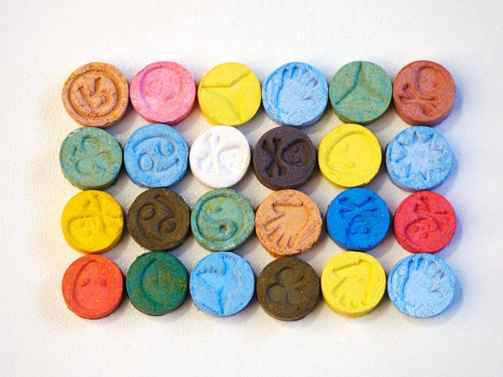

Chemical composition + effects on the brain
3,4-methylenedioxy-methamphetamine (also called MDMA or ecstasy) is a synthetic drug that alters mood and external awareness. Its chemical formula is C₁₁H₁₅NO₂, and its structure can be seen below.
MDMA affects the brain by increasing the activity of three primary neurotransmitters: serotonin, which affects mood, dopamine, which produces increased energy/activity, and norepinephrine, which increases heart rate and blood pressure.
The neurotransmitter most greatly increased in release is serotonin, which causes the elevating effects that people experience. However, several days after taking the drug, people may experience negative psychological effects due to the resulting depletion of these neurotransmitters after releasing such large amounts. Low serotonin may cause poor memory, depression, confusion, anxiety, paranoia and impairment of memory. There is a large range of long term effects as well, which include arrhythmia, depression, impulsivity, impaired attention and memory, as well as anxiety.
Addiction
There is no definite research to confirm that the drug MDMA is addictive, but we know that it affects similar areas of the neurotransmitter systems in the brain that are targeted by other addictive drugs. Data from both humans and animals suggest that regular MDMA usage produces adaptations in the serotonin and dopamine systems that are associated with substance use disorder and related behaviors. Some people who use MDMA do report symptoms of addiction, including continued use despite negative physical or psychological consequences, tolerance, withdrawal, and craving. Additionally, tolerance to ecstasy builds quickly. Therefore the more often you take ecstasy, the less effect the drug has. Taking more of the drug may not achieve the desired results, as frequent ecstasy use depletes serotonin and other brain chemicals that give the ecstasy high, though luckily, the overdose rate for this drug is very low.